건축산업기사 (2019-03-03 기출문제)
1과목: 건축계획
1. 레드번(Radburn) 계획의 기본 원리에 속하지 않는 것은?
- 보도와 차도의 평면적 분리
- 기능에 따른 4가지 종류의 도로 구분
- 자동차 통과도로 배제를 위한 슈퍼블록 구성
- 주택단지 어디로나 통할 수 있는 공동 오픈스페이스 조성
(정답률: 66%)

2. 사무소 건축의 실단위 계획 중 개실시스템에 관한 설명으로 옳은 것은?
- 전면적을 유용하게 이용할 수 있다.
- 복도가 없어 인공조명과 인공환기가 요구된다.
- 칸막이벽이 없어서 개방식 배치보다 공사비가 저렴하다.
- 방길이에는 변화를 줄 수 있으나, 방깊이에 변화를 줄 수 없다.
(정답률: 75%)
3. 아파트 평면 형식에 관한 설명으로 옳지 않은 것은?
- 집중형은 대지에 대한 이용률이 높다.
- 계단실형은 거주의 프라이버시가 높다.
- 중복도형은 통행부의 면적이 작은 관계로 건축물의 이용도가 가장 높다.
- 편복도형은 각 층에 있는 공용 복도를 통해 각 주호로 출입하는 형식이다.
(정답률: 77%)
4. 공동주택의 단면형식 중 메조넷형에 관한 설명으로 옳은 것은?
- 작은 규모의 주택에 적합하다.
- 주택 내의 공간의 변화가 없다.
- 거주성, 특히 프라이버시가 높다.
- 통로면적이 증가하여 유효면적이 감소된다.
(정답률: 70%)
5. 사무소 건축의 코어형식 중 2방향 피난이 가능하여 방재상 가장 유리한 것은?
- 편심코어형
- 독립코어형
- 양단코어형
- 중심코어형
(정답률: 88%)
6. 공간의 레이아웃에 관한 설명으로 가장 알맞은 것은?
- 조형적 아름다움을 부가하는 작업이다.
- 생활행위를 분석해서 분류하는 작업이다.
- 공간에 사용되는 재료의 마감 및 색채계획이다.
- 공간을 형성하는 부분과 설치되는 물체의 평면상 배치계획이다.
(정답률: 79%)
7. 단독주택의 거실 계획에 관한 설명으로 옳지 않은 것은?
- 거실은 평면계획상 통로나 홀로서 사용되도록 한다.
- 식당, 계단, 현관 등과 같은 다른 공간과의 연계를 고려해야 한다.
- 거실과 정원은 유기적으로 시각적 연결을 하여 유동적인 감각을 갖게 한다.
- 개방된 공간에서 벽면의 기술적인 활용과 자유로운 가구의 배치로서 독립성이 유지되도록 한다.
(정답률: 80%)
8. 공장건축의 형식 중 분관식(Pavillion type)에 관한 설명으로 옳지 않은 것은?
- 통풍, 채광에 불리하다.
- 배수, 물홈통 설치가 용이하다.
- 공장의 신설, 확장이 비교적 용이하다.
- 건물마다 건축 형식, 구조를 각기 다르게 할 수 있다.
(정답률: 79%)
9. 다음 설명에 알맞은 상점의 숍 프론트 형식은?
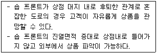
- 평형
- 다층형
- 만입형
- 돌출형
(정답률: 80%)
10. 교실의 배치형식 중에서 엘보우형(elbow access)에 관한 설명으로 옳은 것은?
- 학습의 순수율이 낮다.
- 복도의 면적이 절약된다.
- 일조, 통풍 등 실내환경이 균일하다.
- 분관별로 특색있는 계획을 할 수 없다.
(정답률: 59%)
11. 한식주택과 양식주택에 관한 설명으로 옳지 않은 것은?
- 한식주택은 좌식이나, 양식주택은 입식이다.
- 한식주택의 실은 혼용도이나, 양식주택은 단일용도이다.
- 한식주택의 평면은 개방적이나, 양식주택은 은폐적이다.
- 한식주택의 가구는 부차적이나, 양식주택은 주요한 내용물이다.
(정답률: 77%)
12. 상점의 진열장(Show Case) 배치 유형 중 다른 유형에 비하여 상품의 전달 및 고객의 동선상 흐름이 가장 빠른 형식으로 협소한 매장에 적합한 것은?
- 굴절형
- 직렬형
- 환상형
- 복합형
(정답률: 85%)
13. 다음 중 단독주택에서 부엌의 크기 결정 시 고려하여야 할 사항과 가장 거리가 먼 것은?
- 거실의 크기
- 작업대의 면적
- 주택의 연면적
- 작업자의 동작에 필요한 공간
(정답률: 71%)
14. 다음 설명에 알맞은 단지 내 도로 형식은?
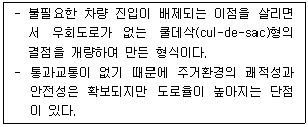
- 격자형
- 방사형
- T자형
- Loop형
(정답률: 74%)
15. 사무소 건축의 엘리베이터 계획에 관한 설명으로 옳지 않은 것은?
- 교통동선의 중심에 설치하여 보행거리가 짧도록 배치한다.
- 일렬 배치는 4대를 한도로 하고, 엘리베이터 중심 간 거리는 8m 이하가 되로록 한다.
- 여러 대의 엘리베이터를 설치하는 경우, 그룹별 배치와 군 관리 운전방식으로 한다.
- 엘리베이터 대수산정은 이용자가 제일 많은 점심시간 전후의 이용자수를 기준으로 한다.
(정답률: 79%)
16. 사무소 건축의 기준층 층고 결정 요소와 가장 거리가 먼 것은?
- 채광률
- 공기조화설비
- 사무실의 깊이
- 엘리베이터 대수
(정답률: 78%)
17. 어느 학교의 1주간 평균수업시간은 40시간인데 미술교실이 사용되는 시간은 20시간이다. 그 중 4시간은 영어수업을 위해 사용될 때, 미술교실의 이용률과 순수율은 얼마인가?
- 이용률 50%, 순수율 20%
- 이용률 50%, 순수율 80%
- 이용률 20%, 순수율 50%
- 이용률 80%, 순수율 50%
(정답률: 80%)
18. 백화점에 에스컬레이터 설치 시 고려사항으로 옳지 않은 것은?
- 건축적 점유면적이 가능한 한 크게 배치한다.
- 승강 · 하강 시 매장에서 잘 보이는 곳에 설치한다.
- 각 층 승강장은 자연스러운 연속적 흐름이 되도록 한다.
- 출발 기준층에서 쉽게 눈에 띄도록 하고 보행동선 흐름의 중심에 설치한다.
(정답률: 85%)
19. 주택에서 리빙 키친(Living Kitchen)의 채택효과로 가장 알맞은 것은?
- 장래 증축의 용이
- 거실 규모의 확대
- 부엌의 독립성 강화
- 주부 가사노동의 간편화
(정답률: 79%)
20. 공장건축에서 효율적인 자연채광 유입을 위해 고려해야 할 사항으로 옳지 않은 것은?
- 가능한 동일 패턴의 창을 반복하는 것이 바람직하다.
- 벽면 및 색채 계획 시 빛의 반사에 대한 면밀한 검토가 요구된다.
- 채광량 확보를 위해 젖빛 유리나 프리즘 유리는 사용하지 않는다.
- 주로 공장은 대부분 기계류를 취급하므로 가능한 창을 크게 설치하는 것이 좋다.
(정답률: 71%)
2과목: 건축시공
21. 내화벽돌의 줄눈너비는 도면 또는 공사시방서에 따르고 그 지정이 없을 때에는 가로 세로 얼마를 표준으로 하는가?
- 3mm
- 6mm
- 12mm
- 18mm
(정답률: 67%)
22. 실리카 흄 시멘트(silica fume cement)의 특징으로 옳지 않은 것은?
- 초기강도는 크나, 장기강도는 감소한다.
- 화학적 저항성 증진효과가 있다.
- 시공연도 개선효과가 있다.
- 재료분리 및 블리딩이 감소된다.
(정답률: 75%)
23. 콘크리트 내부 진동기의 사용법에 관한 설명으로 옳지 않은 것은?
- 콘크리트다지기에는 내부진동기의 사용을 원칙으로 하나, 얇은벽 등 내부진동기의 사용이 곤란한 장소에서는 거푸집진동기를 사용해도 좋다.
- 내부진동기는 연직으로 찔러 넣으며, 그 간격은 진동이 유효하다고 인정되는 범위의 지름이하로서 일정한 간격으로 한다.
- 1개소당 진동시간은 다짐할 때 시멘트풀이 표면상부로 약간 부상하기까지가 적절하다.
- 진동다지기를 할 때에는 내부진동기를 하층의 콘크리트 속으로 0.5m 정도 찔러 넣는다.
(정답률: 59%)
24. 설치높이 2m 이하로서 실내공사에서 이동이 용이한 비계는?
- 겹비계
- 쌍줄비계
- 말비계
- 외줄비계
(정답률: 73%)
25. 네트워크 공정표에 관한 설명으로 옳지 않은 것은?
- CPM공정표는 네트워크 공정표의 한 종류이다.
- 요소작업의 시작과 작업기간 및 작업완료점을 막대그림으로 표시한 것이다.
- PERT공정표는 일정계산 시 단계(Event)를 중심으로 한다.
- 공사전체의 파악 및 진척관리가 용이하다.
(정답률: 77%)
26. 시멘트의 비표면적을 나타내는 것은?
- 조립율(FM : fineness modulus)
- 수경율(HM : hydration modulus)
- 분말도(fineness)
- 슬럼프치(slump)
(정답률: 70%)
27. 침엽수에 관한 설명으로 옳지 않은 것은?
- 일반적으로 구조용재로 사용된다.
- 직선부재를 얻기에 용이하다.
- 종류로는 소나무, 잣나무 등이 있다.
- 활엽수에 비해 비중과 경도가 크다.
(정답률: 73%)
28. 프로젝트 전담조직(project task force organization)의 장점이 아닌 것은?
- 전체업무에 대한 높은 수준의 이해도
- 조직내 인원의 사내에서의 안정적인 위치확보
- 새로운 아이디어나 공법 등에 대응 용이
- 밀접한 인간관계 형성
(정답률: 69%)
29. 공기 중의 수분과 화학반응하는 경우 저온과 저습에서 경화가 늦어져 5℃ 이하에서 촉진제를 사용하는 플라스틱 바름 바닥재는?
- 에폭시수지
- 아크릴수지
- 폴리우레탄
- 클로로프렌고무
(정답률: 60%)
30. 품질관리 단계를 계획(Plan), 실시(Do), 검토(Check), 조치(Action)의 4단계로 구분할 때 계획(Plan)단계에서 수행하는 업무가 아닌 것은?
- 적정한 관리도 선정
- 작업표준 설정
- 품질관리 대상 항목 결정
- 시방에 의거 품질표준 설정
(정답률: 50%)
31. 기성콘크리트말뚝을 타설할 때 말뚝머리지름이 36cm라면 말뚝 상호간의 중심간격은?
- 60cm 이상
- 70cm 이상
- 80cm 이상
- 90cm 이상
(정답률: 60%)
32. 파워쇼벨(power shovel)사용 시 1시간당 굴착량은? (단, 버킷용량 : 0.76m3, 토량환산계수 : 1.28, 버킷계수 : 0.95, 작업효율 : 0.50, 1회 사이클 시간 : 26초)
- 12.01 m3/h
- 39.⑤ m3/h
- 63.98 m3/h
- 93.28 m3/h
(정답률: 57%)
33. 건축재료 중 알루미늄에 관한 설명으로 옳지 않은 것은?
- 산이나 알칼리 및 해수에 침식되지 않는다.
- 알루미늄박(箔)을 이용하여 단열재, 흡음판을 만들기도 한다.
- 구리, 망간 등의 금속과 합금하여 이용이 가능하다.
- 알루미늄의 표면처리에는 양극산화 피막법 및 화학적 산화피막법이 있다.
(정답률: 75%)
34. 콘크리트의 압축강도 검사 중 타설량 기준에 따른 시험 횟수로 옳은 것은? (단, KCS기준)
- 120m3 당 1회
- 180m3 당 1회
- 120m3 당 2회
- 180m3 당 2회
(정답률: 60%)
35. 홈통공사에 관한 설명으로 옳지 않은 것은?
- 선홈통은 콘크리트 속에 매입 설치한다.
- 처마홈통의 양 갓은 둥글게 감되, 안감기를 원칙으로 한다.
- 선홈통의 맞붙임은 거멀접기로 하고, 수밀하게 눌러 붙인다.
- 선홈통의 하단부 배수구는 45° 경사로 건물 바깥쪽을 향하게 설치한다.
(정답률: 61%)
36. 치장 줄눈을 하기 위한 줄눈 파기는 타일(tile)붙임이 끝나고 몇 시간이 경과했을 때 하는 것이 가장 적당한가?
- 타일을 붙인 후 1시간이 경과할 때
- 타일을 붙인 후 3시간이 경과할 때
- 타일을 붙인 후 24시간이 경과할 때
- 타일을 붙인 후 48시간이 경과할 때
(정답률: 75%)
37. 커튼월의 빗물침입의 원인이 아닌 것은?
- 표면장력
- 모세관 현상
- 기압차
- 삼투압
(정답률: 60%)
38. 콘크리트 혼화제 중 AE제에 관한 설명으로 옳지 않은 것은?
- 연행공기의 볼베어링 역할을 한다.
- 재료분리와 블리딩을 감소시킨다.
- 많이 사용할수록 콘크리트의 강도가 증가한다.
- 경화콘크리트의 동결융해저항성을 증가시킨다.
(정답률: 76%)
39. 주로 방화 및 방재용으로 사용되는 유리는?
- 망입유리
- 보통판유리
- 강화유리
- 복층유리
(정답률: 72%)
40. 턴키 도급(turn key based contract) 방식의 특징으로 옳은 것은? (문제오류 수정됨)
- 건축주의 기술능력이 부족할 때 채택
- 공사비 및 공기 단축 가능
- 과다경쟁으로 인한 덤핑의 우려 증가
- 시공자의 손실위험 완화 및 적정이윤 보장
(정답률: 42%)
3과목: 건축구조
41. 다음 그림과 같은 단순보에서 중앙부 최대처짐은 얼마인가? (단, I=1.0×108mm4 , E=1.0×104MPa 임)
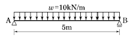
- 10.18 mm
- 20.35 mm
- 40.69 mm
- 81.38 mm
(정답률: 45%)
42. 다음 그림과 같은 트러스 구조물의 판별로 옳은 것은?
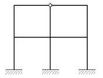
- 12차 부정정
- 11차 부정정
- 10차 부정정
- 9차 부정정
(정답률: 57%)
43. 그림과 같은 철근콘크리트 띠철근 기둥의 최대설계축하중(øPn)을 구하면? (단, 주근은 8-D22(3,096mm2), fck=24MPa, fy=400MPa, ø=0.65 임)
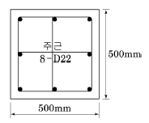
- 2913 kN
- 3113 kN
- 3263 kN
- 5333 kN
(정답률: 49%)
44. 강구조에서 외력이 부재에 작용할 때 부재의 단면에 비틀림이 생기지 않고 휨변형만 발생하는 위치를 무엇이라 하는가?
- 무게중심
- 하중중심
- 전단중심
- 강성중심
(정답률: 64%)
45. 장기하중 1800kN(자중포함)을 받는 독립기초판의 크기는? (단, 지반의 장기허용지내력은 300kN/m2)
- 1.8m × 1.8m
- 2.0m × 2.0m
- 2.3m × 2.3m
- 2.5m × 2.5m
(정답률: 53%)
46. 철근콘크리트 휨재의 구조해석을 위한 가정으로 옳지 않은 것은?
- 콘크리트는 인장응력을 지지할 수 없다.
- 콘크리트는 압축변형도가 0.003에 도달되었을 때 파괴된다.
- 철근에 생기는 변형은 같은 위치의 콘크리트에 생기는 변형보다 탄성계수비만큼 크다.
- 철근과 콘크리트의 응력은 철근과 콘크리트의 응력-변형도로부터 계산할 수 있다.
(정답률: 55%)
47. 그림과 같은 단순보를 H형강을 사용하여 설계하였다. 부재의 최대 휨응력은? (단, E=2.08×105MPa, Zx=771×103mm3)
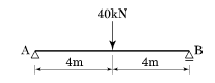
- 51.88 MPa
- 103.76 MPa
- 207.52 MPa
- 311.28 MPa
(정답률: 49%)
48. 400kN의 고정하중, 300kN의 활하중, 200kN의 풍하중이 강구조 기둥에 축력으로 작용하고 있다. 기둥의 소요강도의 얼마인가?
- 1000 kN
- 1040 kN
- 1080 kN
- 1120 kN
(정답률: 48%)
49. 그림과 같은 단근 장방형보에 대하여 균형철근비 상태일 때의 압축단에서 중립축까지의 길이 Cb는? (단, fck=24MPa, fy=400MPa, Es=2.0×105MPa이다.)
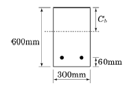
- 306mm
- 324mm
- 360mm
- 520mm
(정답률: 50%)
50. 다음 그림과 같은 구조물에서 점 A에 18kN·m이 작용할 때 B단의 재단 모멘트 값을 구하면? (단, 부재의 길이와 단면은 동일)
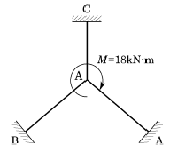
- 2.5 kN·m
- 3 kN·m
- 4 kN·m
- 12 kN·m
(정답률: 59%)
51. 철근콘크리트의 구조설계에서 철근의 부착력에 영향을 주지 않는 것은?
- 콘크리트 피복두께
- 콘크리트 압축강도
- 철근의 외부표면 돌기
- 철근의 항복강도
(정답률: 59%)
52. 단면적이 1000mm2이고, 길이는 2m인 균질한 재료로 된 철근에 재축방향으로 100kN의 인장력을 작용시켰을 때 늘어난 길이는? (단, 탄성계수는 2.0×105MPa임)
- 1mm
- 0.1mm
- 0.01mm
- 0.001mm
(정답률: 51%)
53. 그림과 같은 단순보에 생기는 최대 휨응력도의 값은?
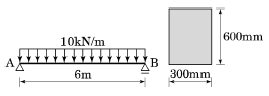
- 2.5 MPa
- 3.0 MPa
- 3.5 MPa
- 4.0 MPa
(정답률: 37%)
54. 다음과 같은 구조물에서 최대 전단응력도는? (단, 부재의 단면은 b×h=200mm × 300mm)
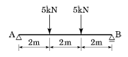
- 0.1⑤ MPa
- 0.115 MPa
- 0.125 MPa
- 0.135 MPa
(정답률: 59%)
55. 그림과 같은 단순보가 집중하중과 등분포하중을 받고 있을 때 C점의 휨 모멘트를 구하면?
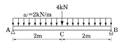
- 8 kN·m
- 10 kN·m
- 12 kN·m
- 14 kN·m
(정답률: 52%)
56. 그림과 같은 트러스에서 AC의 부재력은?
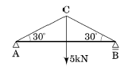
- 5kN(인장)
- 5kN(압축)
- 10kN(인장)
- 10kN(압축)
(정답률: 51%)
57. 말뚝 기초에 관한 설명으로 옳지 않은 것은?
- 말뚝은 압밀 등에 대한 침하를 고려하여야 한다.
- 말뚝 기초의 허용지지력 산정은 말뚝만이 힘을 받는 것으로 계산하여야 한다.
- 말뚝기초의 기초판 설계에서 말뚝의 반력은 중심에 집중된다고 가정하여 휨모멘트를 계산할 수 있다.
- 대규모 기초 구조는 기성말뚝과 제자리 콘크리트 말뚝을 혼용하여야 한다.
(정답률: 53%)
58. 그림과 같은 정방형 단추(短柱)의 E점에 압축력 100kN이 작용할 때 B점에 발생되는 응력의 크기는?
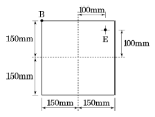
- -1.11 MPa
- 1.11 MPa
- -2.22 MPa
- 2.22 MPa
(정답률: 47%)
59. 다음 그림과 같은 필릿용접부의 설계강도를 구할 때 요구되는 용접유효길이를 구하면?
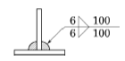
- 200mm
- 176mm
- 152mm
- 134mm
(정답률: 55%)
60. 강도설계법으로 설계한 콘크리트 구조물에서 처짐의 검토는 어느 하중을 사용하는가?
- 사용하중(service load)
- 설계하중(design load)
- 계수하중(factored load)
- 상재하중(surchage load)
(정답률: 47%)
4과목: 건축설비
61. 공기조화방식 중 전수방식(all water system)의 일반적 특징으로 옳지 않은 것은?
- 덕트 스페이스가 필요없다.
- 팬 코일 유닛방식 등이 있다.
- 실내 배관에서 누수의 우려가 있다.
- 실내공기의 청정도 유지가 용이하다.
(정답률: 52%)
62. 옥내소화전설비를 설치하여야 하는 특정소방대상물에서 옥내소화전이 가장 많이 설치된 층의 설치개수가 3개 일 때, 소화펌프의 토출량은 최소 얼마 이상이 되도록 하여야 하는가?(2021년 04월 01일 개정된 기준 적용됨)
- 200L/min
- 260L/min
- 390L/min
- 500L/min
(정답률: 66%)
63. 난방부하 계산 시 각 외벽을 통한 손실열량은 방위에 따른 방향계수에 의해 값을 보정하는데, 계수 값의 대소 관계가 옳게 표현된 것은?
- 북 ＞ 동 · 서 ＞ 남
- 북 ＞ 남 ＞ 동 · 서
- 동 ＞ 남 · 북 ＞ 서
- 남 ＞ 북 ＞ 동 · 서
(정답률: 70%)
64. 다음의 소방시설 중 경보설비에 속하지 않는 것은?
- 비상방송설비
- 자동화재속보설비
- 자동화재탐지설비
- 무선통신보조설비
(정답률: 69%)
65. 다음 중 기계식 증기트랩에 속하지 않는 것은?
- 버킷 트랩
- 플로트 트랩
- 바이메탈 트랩
- 플로트 · 서모스탯 트랩
(정답률: 47%)
66. 트랩의 봉수 파괴 원인과 가장 거리가 먼 것은?
- 증발 현상
- 서어징 현상
- 모세관 현상
- 자기사이펀 작용
(정답률: 66%)
67. 대변기 세정 급수장치에 진공방지기(vacuum breaker)를 설치하는 가장 주된 이유는?
- 급수관 부식 방지
- 급수관 내의 유속 조절
- 급수관에서의 수격작용 방지
- 오수가 급수관으로 역류하는 현상 방지
(정답률: 64%)
68. 고가수조방식의 급수방식에서 최상층에 설치된 위생기구로부터 고가수조 저수위면까지의 필요 최소높이는? (단, 최상층 위생기구의 필요수압은 70kPa, 배관마찰손실수두는 1mAq이다.)
- 1.7m
- 6m
- 8m
- 15m
(정답률: 60%)
69. 트랩으로서의 성능에 문제가 있어 사용하지 않는 것이 바람직한 트랩에 속하지 않는 것은?
- 2중 트랩
- 수봉식 트랩
- 가동부분이 있는 것
- 내부 치수가 동일한 S트랩
(정답률: 52%)
70. 건구온도 18℃, 상대습도 60% 인 공기가 여과기를 통과한 후 가열 코일을 통과하였다. 통과 후의 공기 상태는?
- 비체적 감소
- 엔탈피 감소
- 상대습도 증가
- 습구온도 증가
(정답률: 48%)
71. 공기조화방식 중 2중덕트방식에 관한 설명으로 옳지 않은 것은?
- 혼합상자에서 소음과 진동이 생긴다.
- 덕트가 1개의 계통이므로 설비비가 적게 든다.
- 부하특성이 다른 다수의 실이나 존에도 적용할 수 있다.
- 냉 · 온풍의 혼합으로 인한 혼합손실이 있어서 에너지 소비량이 많다.
(정답률: 75%)
72. 다음 중 주방, 보일러실 등 다량의 화기를 단속 취급하는 장소에 가장 적합한 자동화재탐지 설비의 감지기는?
- 광전식 감지기
- 차동식 감지기
- 정온식 감지기
- 이온화식 감지기
(정답률: 59%)
73. 양수펌프의 양수량이 18m3/h이고 양정이 60m일 때 펌프의 축동력은? (단, 펌프의 효율은 50% 이다.)
- 0.35 kW
- 1.47 kW
- 2.94 kW
- 5.88 kW
(정답률: 40%)
74. 수질 관련 용어 중 BOD가 의미하는 것은?
- 용존산소량
- 수소이온농도
- 화학적 산소요구량
- 생물화학적 산소요구량
(정답률: 77%)
75. 일반적으로 지름이 큰 대형관에서 배관 조립이나 관의 교체를 손쉽게 할 목적으로 이용되는 이음 방식은?
- 신축 이음
- 용접 이음
- 나사 이음
- 플랜지 이음
(정답률: 67%)
76. 다음 중 외기온과 실온변화에 있어서 시간지연에 직접적인 영향을 미치는 요소는?
- 열관류율
- 기류속도
- 표면복사율
- 구조체의 열용량
(정답률: 40%)
77. 공동주택에서 각종 정보를 관리하는 목적으로 관리인실에 설치하는 공동주택 관리용 인터폰의 기능에 속하지 않는 것은?
- 주출입구의 개폐기능
- 전기절약을 위한 전등 소등 기능
- 비상 푸시버튼에 의한 비상통보기능
- 방범스위치에 의한 불법침입통보기능
(정답률: 69%)
78. 금속관 공사에 관한 설명으로 옳지 않은 것은?
- 전선의 인입이 용이하다.
- 전선의 과열로 인한 화재의 위험성이 작다.
- 외부적 응력에 대해 전선보호의 신뢰성이 높다.
- 철근콘크리트 건물의 매입 배선으로는 사용할 수 없다.
(정답률: 71%)
79. 전압의 분류에서 저압의 범위 기준으로 옳은 것은?(2021년 개정된 KEC 규정 적용됨)
- 직류 400[V] 이하, 교류 400[V] 이하
- 직류 400[V] 이하, 교류 600[V] 이하
- 직류 600[V] 이하, 교류 600[V] 이하
- 직류 1500[V] 이하, 교류 1000[V] 이하
(정답률: 67%)
80. 환기설비에 관한 설명으로 옳지 않은 것은?
- 환기는 복수의 실을 동일 계통으로 하는 것을 원칙으로 한다.
- 필요 환기량은 실의 이용목적과 사용 상황을 충분히 고려하여 결정한다.
- 외기를 받아들이는 경우에는 외기의 오염도에 따라서 공기청정 장치를 설치한다.
- 전열 교환기에서 열회수를 하는 배기계통에는 악취나 배기가스 등 오염물질을 수반하는 배기는 사용하지 않는다.
(정답률: 62%)
5과목: 건축관계법규
81. 부설주차장 설치대상 시설물이 숙박시설인 경우, 부설주차장 설치기준으로 옳은 것은?
- 시설면적 100m2당 1대
- 시설면적 150m2당 1대
- 시설면적 200m2당 1대
- 시설면적 300m2당 1대
(정답률: 63%)
82. 다음은 노외주차장의 구조 · 설비에 관한 기준 내용이다. ( )안에 알맞은 것은?
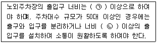
- ㉠ 2.5m, ㉡ 4.5m
- ㉠ 2.5m, ㉡ 5.5m
- ㉠ 3.5m, ㉡ 4.5m
- ㉠ 3.5m, ㉡ 5.5m
(정답률: 63%)
83. 건축물의 층수가 23층이고 각 층의 거실면적이 1000m2인 숙박시설에 설치하여야 하는 승용승강기의 최소대수는? (단, 8인승 승용승강기의 경우)
- 7대
- 8대
- 9대
- 10대
(정답률: 46%)
84. 건축물의 대지에 공개 공지 또는 공개 공간을 확보해야 하는 대상 건축물에 속하지 않는 것은? (단, 일반주거지역이며, 해당 용도로 쓰는 바닥 면적의 합계가 5000m2 이상인 건축물인 경우)
- 운동시설
- 숙박시설
- 업무시설
- 문화 및 집회시설
(정답률: 47%)
85. 대지면적이 600m2이고 조경면적이 대지면적의 15%로 정해진 지역에 건축물을 신축할 경우, 옥상에 조경을 90m2 시공하였다면, 지표면의 조경면적은 최소 얼마 이상이어야 하는가?
- 0m2
- 30m2
- 45m2
- 60m2
(정답률: 59%)
86. 건축법상 다음과 같이 정의되는 용어는?
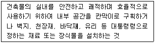
- 리모델링
- 실내건축
- 실내장식
- 실내디자인
(정답률: 69%)
87. 건축물의 내부에 설치하는 피난계단의 경우 건축물의 내부에서 계단실로 통하는 출입구의 유효너비는 최소 얼마 이상으로 하여야 하는가?
- 0.75m
- 0.9m
- 1.0m
- 1.2m
(정답률: 61%)
88. 건축물의 거실(피난층의 거실 제외)에 국토교통부령으로 정하는 기준에 따라 배연설비를 하여야 하는 대상건축물의 용도에 속하지 않는 것은? (단, 6층 이상인 건축물의 경우)
- 공동주택
- 판매시설
- 숙박시설
- 위락시설
(정답률: 52%)
89. 문화 및 집회시설 중 공연장의 개별관람석의 출구에 관한 설명으로 옳은 것은? (단, 개별관람석의 바닥면적은 900m2 이다.)
- 각 출구의 유효너비는 1.2m 이상이어야 한다.
- 관람석별로 최소 4개소 이상 설치하여야 한다.
- 관람석으로부터 바깥쪽으로의 출구로 쓰이는 문은 안여닫이로 하여야 한다.
- 개별관람석 출구의 유효너비 합계는 최소 5.4m 이상으로 하여야 한다.
(정답률: 45%)
90. 부설주차장의 인근 설치와 관련하여 시설물의 부지 인근의 범위(해당 부지의 경계선으로부터 부설주차장의 경계선까지의 거리) 기준으로 옳은 것은?
- 직선거리 100m 이내 또는 도보거리 500m 이내
- 직선거리 100m 이내 또는 도보거리 600m 이내
- 직선거리 300m 이내 또는 도보거리 500m 이내
- 직선거리 300m 이내 또는 도보거리 600m 이내
(정답률: 66%)
91. 다음은 옥상광장 등의 설치에 관한 기준 내용이다. ( )안에 알맞은 것은?
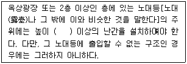
- 0.9m
- 1.2m
- 1.5m
- 1.8m
(정답률: 64%)
92. 문화 및 집회시설 중 집회장의 용도에 쓰이는 건축물의 집회실로서 그 바닥면적이 200m2 이상인 경우, 반자 높이는 최소 얼마 이상이어야 하는가? (단, 기계환기장치를 설치하지 않은 경우)
- 1.8m
- 2.1m
- 2.7m
- 4.0m
(정답률: 57%)
93. 다음은 피난용 승강기의 설치에 관한 기준 내용이다. ( )안에 알맞은 것은?
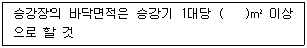
- 5
- 6
- 8
- 10
(정답률: 65%)
94. 다음 중 부설주차장을 추가로 확보하지 아니하고 건축물의 용도를 변경할 수 있는 경우에 관한 기준 내용으로 옳은 것은? (단, 문화 및 집회시설 중 공연장 · 집회장 · 관람장, 위락시설 및 주택 중 다세대주택 · 다가구주택의 용도로 변경하는 경우는 제외)
- 사용승인 후 3년이 지난 연면적 1000m2 미만의 건축물의 용도를 변경하는 경우
- 사용승인 후 3년이 지난 연면적 2000m2 미만의 건축물의 용도를 변경하는 경우
- 사용승인 후 5년이 지난 연면적 1000m2 미만의 건축물의 용도를 변경하는 경우
- 사용승인 후 5년이 지난 연면적 2000m2 미만의 건축물의 용도를 변경하는 경우
(정답률: 52%)
95. 국토의 계획 및 이용에 관한 법률에 따른 용도 지역의 건폐율 기준으로 옳지 않은 것은?
- 주거지역 : 70% 이하
- 상업지역 : 80% 이하
- 공업지역 : 70% 이하
- 녹지지역 : 20% 이하
(정답률: 58%)
96. 건축법령상 다가구주택이 갖추어야 할 요건에 해당하지 않는 것은?
- 독립된 주거의 형태가 아닐 것
- 19세대 이하가 거주할 수 있는 것
- 주택으로 쓰이는 층수(지하층은 제외)가 3개층 이하일 것
- 1개 동의 주택으로 쓰는 바닥면적(부설주차장 면적은 제외)의 합계가 660m2 이하일 것
(정답률: 64%)
97. 제2종 전용주거지역안에서 건축할 수 있는 건축물에 속하지 않는 것은? (단, 도시 · 군계획조례가 정하는 바에 의하여 건축할 수 있는 건축물 포함)
- 아파트
- 의료시설
- 노유자시설
- 다가구주택
(정답률: 32%)
98. 다음은 건축물의 층수 산정 방법에 관한 기준 내용이다. ( )안에 알맞은 것은?
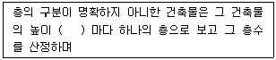
- 2m
- 3m
- 4m
- 5m
(정답률: 77%)
99. 건축물에 급수, 배수, 환기, 난방 설비 등의 건축설비를 설치하는 경우 건축기계설비기술사 또는 공조냉동기계기술사의 협력을 받아야 하는 대상 건축물의 연면적 기준은? (단, 창고시설을 제외)
- 연면적 5천 제곱미터 이상인 건축물
- 연면적 1만 제곱미터 이상인 건축물
- 연면적 5만 제곱미터 이상인 건축물
- 연면적 10만 제곱미터 이상인 건축물
(정답률: 57%)
100. 다음 중 허가 대상에 속하는 용도변경은?
- 수련시설에서 업무시설로의 용도변경
- 숙박시설에서 위락시설로의 용도변경
- 장례시설에서 의료시설로의 용도변경
- 관광휴게시설에서 판매시설로의 용도변경
(정답률: 44%)